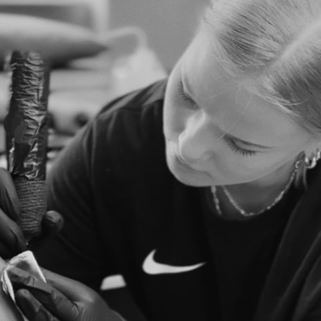

En tatuoi alle 18-vuotiaita, raskaana olevia enkä imettäviä
Ethän tule tatuoitavaksi päihteiden vaikutuksen alaisena
Syö, juo ja nuku hyvin ennen tatuointiaikaa
Voit kevyesti rasvata tatuoitavaa kohtaa jo edeltävinä päivinä, jotta ihosi on pehmeämpi ja helpompi käsitellä
Pukeudu mukaviin vaatteisiin! Huomioithan, että tatuointimuste mahdollisesti roiskuessaan ei irtoa vaatteista
Asiakas on velvollinen kertomaan, mikäli hänen terveydentilassaan on jotain sellaista, jolla voi olla vaikutusta tatuointitilanteessa
Halutessasi voit ottaa mukaasi eväitä etenkin pitkiä tatuointisessioita varten, käytössäsi on mikro sekä jääkaappi
Asiakas on itse vastuussa hyvästä jälkihoidosta - ohjeet saa kotiin mukaan!
Laitathan minulle parantuneesta tatuoinnistasi kuvan noin kuukauden kuluttua, jotta voin arvioida vaatiiko kuva mahdollisesti vahvistamista tai muuta korjailua

Älä epäröi ottaa yhteyttä mieltä askarruttavissa kysymyksissä tai muissa huolissa!